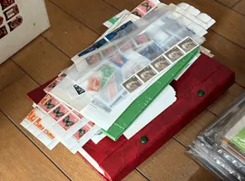

【最新】
PR本ページは
バイセルの切手買取
東証上場企業が
出張・
特徴
- 東証上場企業が
運営 - 累計買取
4,800万点以上※ - 出張・
店頭・ 宅配の3方法 - 査定料・
キャンセル料 無料

画像：バイセル
バイセルは
| 買取対象 | 出張地域 |
|---|---|
| 普通・ | 離島を |
| 買取方法 | 費用 |
| 出張・ | 査定料・ |
| 受付時間 | 断る |
| 電話は | 無料で |
出典：バイセル公式 切手買取ページ
出張は
無料査定を
バイセルの
- 確認
1 査定対象の切手 - 確認
2 出張・店頭・ 宅配の選び方 - 確認
3 買取保証は出張・ 店頭限定 - 確認
4 公式掲載の買取実績 - 確認
5 公式掲載の利用者の声 - 確認
6 申込前のチェックと よく ある質問
確認1 査定対象の切手
バイセルは
- 対象の
例 - 普通切手・
記念切手・ 特殊切手・ 中国切手、 官製は が き （書き損じ・ 汚れ・ 日焼けなど） - そのまま
査定 - 整理されていない
切手・ 台紙貼り・ バラ切手 - 対象外の
例 - 中国切手以外の
海外切手、 贋物・ コピー品・ 偽造 切手、 私製は がき、 消印の ある 官製はがき
確認2 出張・店頭・宅配の選び方
バイセルの
- 出張買取：離島を
除く 全国に 査定士が 訪問。 その場で 査定し、 金額に 納得すれば その場で現金化 - 店頭買取：店舗に
持ち込んで その場で 査定・ 現金化。 店舗の 場所は 公式の 店舗一覧で確認 - 宅配買取：忙しい
方向けに 切手を 送って査定
量が

出張・
無料査定を
確認3 買取保証は出張・店頭限定
バイセルは、
注意：買取保証の
出典：バイセル公式 切手買取ページ
確認4 公式掲載の買取実績
ご注意：いずれも
横に
買取実績1

| 品目 | 前島密 |
|---|---|
| 買取金額 | 22,000円 |
| 買取日 | 2025/08/01 |
| 備考 | 複数点の |
買取実績2

| 品目 | 普通切手 |
|---|---|
| 買取金額 | 15,300円 |
| 買取日 | 2025/05/23 |
| 備考 | 複数点の |
写真・
査定料・
無料査定を
確認5 公式掲載の利用者の声
 60代女性東京都
60代女性東京都世田谷区 出張買取を
利用し、 切手に ついて 色々 質問した ところ 説明が 分かりやすかった ——という 趣旨の 声が、 バイセル公式の 切手買取ページに 掲載されています。
※公式サイト掲載の
確認6 申込前のチェックとよくある質問
申込前に
- お住まいが
出張の 対象か （離島は 対象外） - 希望の
方法 （出張・ 店頭・ 宅配）。 汚れた 切手は 出張・ 店頭が 買取保証の 対象 - 中国切手以外の
海外切手が 混ざっていないか （買取不可） - 本人確認書類を
用意できるか - 金額に
納得できない ときは 無料で キャンセルできる こと - 宅配の
場合、 キャンセル時の 返送料などの 扱い （公式で 要確認 ）
切手を整理していなくても大丈夫ですか？
公式FAQでは、
汚れやシミのある切手は宅配でも買取保証の対象ですか？
買取保証は
外国の切手も売れますか？
中国切手は
査定額に納得できなかったら？
査定料・
出張は
無料査定を